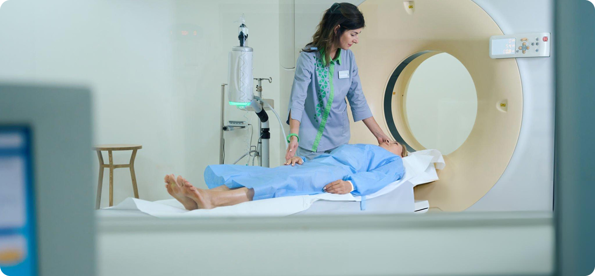
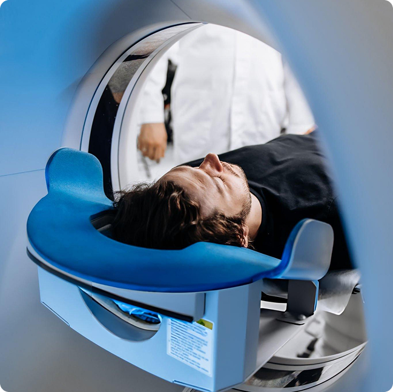

Fast, accurate, and sub-specialized Computed Tomography interpretations. From routine screenings to complex CT Angiography, our ABR-certified specialists deliver the clarity you need to drive patient care.
Computed Tomography is often the first line of defense in
diagnostic medicine. At TopRad, we provide a robust network of
computed tomography specialists capable of handling high-volume
workloads without sacrificing the minute details. Our ct scan
reading services cater to hospitals, stand-alone imaging centers,
and multi-specialty clinics requiring consistent, board-certified
oversight.
Whether you are managing a fleet of multi-slice scanners or
specialized mobile CT units, our team provides the
fellowship-trained expertise required for high-fidelity reporting.
We provide expert interpretations for a wide array of specialized CT applications
Advanced vascular assessments, including PE studies, carotid imaging, and peripheral runoff evaluations.
Specialized reporting for coronary artery disease assessment, requiring specific Level II or III cardiac CT training.
Rapid-response pan-scans for acute care settings, integrated with our STAT teleradiology protocols.
Detailed staging and follow-up CTs using RECIST criteria for precise tumor tracking and response monitoring.
Expert lung cancer screening interpretations following ACR Lung-RADS guidelines.
The volume of data in a modern 128-slice or 256-slice CT is immense. TopRad utilizes a tech-first approach to ensure these datasets are managed efficiently.
Our platform integrates AI pre-processors that flag suspected intracranial hemorrhages or pulmonary embolisms, moving them to the top of the specialist's worklist.
Our radiologists utilize advanced post-processing tools for MIP (Maximum Intensity Projection) and MPR (Multi-Planar Reconstruction) to assist in surgical and procedural planning.
Our DICOM routing infrastructure ensures that large CT datasets are transferred securely and rapidly to our diagnostic stations, maintaining full image quality.


Can you handle CTA studies with 3D reconstructions?
Yes. Our specialists are proficient in reading and interpreting complex CT Angiography and utilize advanced software for 3D reconstructions to provide comprehensive vascular reports.
Do you support Lung-RADS for screening programs?
Yes, we fully support Lung-RADS formatting and classifications for lung screening programs.
What is the turnaround for routine CT studies?
Our standard turnaround time for routine CT studies is within 2-4 hours.
Partner with TopRad for precise, rapid, and sub-specialized CT scan reading services.